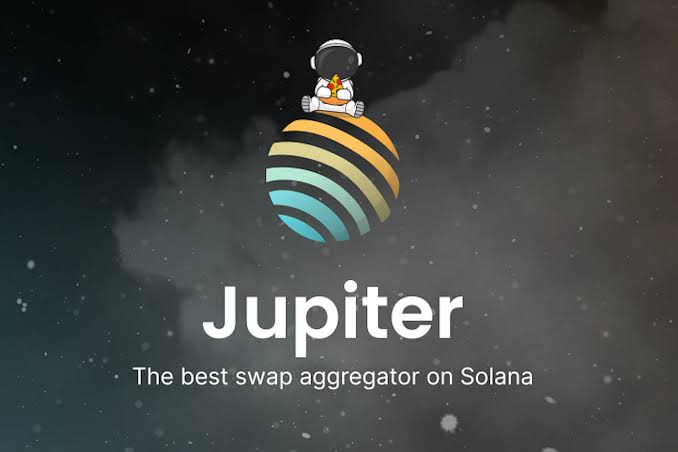

Free AI Website Builder
Jupiter Swap is a decentralized exchange (DEX) and token-swapping interface built for the Solana ecosystem. If you’ve spent any time swapping tokens on Solana, you’ve probably heard of Jupiter—often because it’s known for fast swaps, relatively low friction, and strong routing that can find good prices across multiple liquidity sources.
This article explains what Jupiter Swap is, how the swap process typically works, what makes it different from “single-pool” exchanges, the main risks to understand, and practical best practices so you can swap more safely and effectively.
NOTE:- “Jupiter Swap” can refer to different UI experiences, but the central idea remains the same: Jupiter routes trades across Solana liquidity and executes the swap through one or more underlying DEXs.
Jupiter is a “swap aggregator.” Instead of limiting you to one specific trading pool (like a single AMM pair), an aggregator:
Looks for the best route through available liquidity.
Calculates expected output amounts (after fees/estimated slippage).
Splits or sequences trades across multiple markets if that leads to a better rate.
In simple terms: Jupiter tries to get you the best deal by intelligently routing your swap.
Because it targets Solana, Jupiter benefits from Solana’s high throughput and generally low transaction costs. That often results in a smoother user experience compared with slower or more expensive networks.
On DEXs, liquidity is usually concentrated in specific pools (for example, Token A/USDC). If you want to swap Token A to Token D, you might not have a direct Token A/Token D pool. Instead, you’d need to route through one or more intermediate assets.
Even when a direct pool exists, different pools can have different reserves and fees, meaning the “best price” changes constantly.
An aggregator helps by:
Comparing multiple pools and routes
Estimating which route gives the highest expected output
Executing trades in an efficient sequence
This matters because the best route can depend on:
Pool liquidity at that moment
Trade size (larger trades move price more)
Volatility in token prices
How much slippage you’re willing to tolerate
The available routes the aggregator detects in real time
Even if you only see a simple UI (“swap X for Y”), there are a few important moving pieces behind the scenes.
3.1 Route finding
Jupiter continuously or on-demand determines the best path(s) for your swap. A “route” might look like:
Token A → USDC → Token D
or
Token A → Token B → USDC → Token D
The aggregator tries to estimate which path produces the most Token D for your input amount.
3.2 Quoting (expected output)
Before you sign, Jupiter typically shows:
The estimated amount you’ll receive
The price impact / slippage estimate
Network/transaction fee information (and sometimes platform-related fees, depending on the setup)
Because blockchain conditions change quickly, quotes are estimates. The actual outcome can differ slightly when the transaction lands on-chain.
3.3 Transaction execution
When you confirm, your wallet signs the transaction, and Jupiter routes it to the proper on-chain program(s). Often, the swap is executed via one or more underlying DEX programs or routers on Solana.
3.4 Settlement and confirmation
After execution, the transaction confirms and the output tokens appear in your wallet (or in the token accounts relevant to that wallet, depending on Solana token account setups).
Here’s what using Jupiter Swap usually looks like for an end user:
Connect your wallet
You connect a wallet compatible with Solana (such as Phantom, Solflare, etc.).
Choose the input token and output token
For example, swap SOL → USDC, or meme coin → SOL.
Enter the amount
Jupiter updates quotes dynamically as you change the amount.
Review routing details and slippage tolerance
Jupiter often provides options to adjust slippage. If slippage is too low, the transaction may fail. If too high, you might receive less than expected during volatile conditions.
Confirm the transaction in your wallet
Your wallet will show signing details (sometimes including token approvals/permissions or the exact swap call details depending on wallet and dApp UI).
Wait for confirmation
After confirmation, check:
Output token balance
The transaction status in your wallet history
Any receipt or explorer link if provided
A common question is: “If it’s just a swap button, why is Jupiter better?”
The main differences are:
5.1 Best-route execution
Instead of you manually picking pools, Jupiter tries to do it for you in real time.
5.2 Better prices for many pairs
For tokens without direct liquidity or with fragmented liquidity, route aggregation often improves output.
5.3 Efficiency and simplicity
You can swap between tokens without having to understand intermediate pools. Jupiter handles routing complexity behind the scenes.
5.4 Adapter to Solana’s fast-changing environment
Solana liquidity and token behavior can be highly dynamic. Aggregation helps adapt quickly.
Swaps on DEXs come with market and execution risks. Jupiter’s routing helps, but it cannot eliminate them.
6.1 Slippage tolerance
Slippage tolerance is the maximum loss you allow relative to the quote. For example:
If you quote 100 tokens out and your slippage is 1%, you might accept as low as 99 tokens out.
If the price moves more than that before your swap executes, your transaction may revert/fail.
Practical advice:
For large liquid pairs, you can often use tighter slippage.
For volatile or thin-liquidity meme tokens, you may need more slippage to avoid failures.
6.2 Price impact
Price impact is how much the trade itself moves the market price by consuming reserves in pools. Bigger trades generally cause higher price impact.
High price impact often means:
The token is illiquid
Your trade size is large relative to pool reserves
A multi-hop route might still be necessary but won’t remove the underlying liquidity constraint
6.3 Transaction failures
Common reasons a Jupiter swap transaction may fail:
Slippage too low
Token account issues (not initialized or missing associated token accounts, depending on wallet flows)
Temporary liquidity/routing changes
Network congestion (less common on Solana than many chains, but it can still happen)
When failures happen, no swap usually occurs—but your wallet might still show a transaction attempt.
Depending on the token and routing approach, a swap may involve token approvals or permissions. In some systems, you may need to grant permission for a contract to spend your tokens.
What you should verify
What token is being approved
Who/what address is requesting approval (the spending contract/router)
How much is being approved (exact amount vs “infinite”)
If you’re swapping occasionally, granting large permissions repeatedly may increase risk if a malicious contract or compromised router ever appears. Many wallets let you see details before signing—use that.
When you swap via Jupiter, you typically incur:
Network fees (Solana transaction fee)
DEX-related costs (often built into swap output via pool fees/spreads)
Potential aggregator-related costs
(Usually reflected in the route/output math or through program logic; the UI often indicates the final quoted output and price impact.)
A key best practice: compare quotes. If Jupiter gives worse output than another route or another aggregator, you might still want to check settings and slippage.
Because Jupiter is a DeFi interface, safety is largely about user behavior and wallet hygiene.
9.1 Use the correct site and verify URLs
Phishing clones can look identical. Always confirm you are on the official Jupiter domain before connecting your wallet.
9.2 Never share seed phrases
Your seed phrase should never be requested by a legitimate swap interface. If any page asks for it, stop.
9.3 Double-check token addresses and amounts
Some scams rely on lookalike token symbols. Always ensure the token you’re selecting matches the correct asset (and—when possible—its verified details).
9.4 Be cautious with very new or low-liquidity tokens
Small trades can still be risky if:
Liquidity is extremely thin
Prices can be manipulated easily
Liquidity can be removed suddenly (“rug pull” scenarios)
9.5 Use reasonable slippage
Very high slippage settings can allow your swap to complete but with a drastically worse outcome if something changes between quoting and execution.
If you want to improve results (and reduce the chance of bad execution), consider:
10.1 Compare quotes across times
Even on the same day, liquidity changes. If you’re swapping a large amount, getting a quote at multiple moments might help.
10.2 Reduce unnecessary approvals
If approvals are required, only approve what you need. Some wallets can help you manage token allowances.
10.3 Prefer liquid routing paths for smaller errors
Multi-hop routes can still be correct, but if your token is volatile, the intermediate path may introduce additional variability. The UI often gives you route and price impact estimates—use those.
10.4 Watch for token decimals and exact amounts
Small mistakes (like confusing 1 token vs 1,000 token units due to decimals) can cause big losses. Double-check the amount field and the displayed “from” and “to” values.
“Is Jupiter Swap a DEX?”
Jupiter is best described as an aggregator (routing interface). It may use underlying DEX liquidity, but you interact through Jupiter’s route logic.
“Is Jupiter safer than using a single DEX?”
Safety depends more on token risk, wallet security, phishing resistance, and permission management. Aggregation can improve pricing, but it doesn’t make illiquid token scams safe.
“Why did my swap output differ from the quote?”
Most often due to:
Price movement
Slippage tolerance
Differences between quote and actual execution block
Token liquidity changes
Jupiter Swap stands out in the Solana DeFi space because it reduces the complexity of finding the best swap price. By aggregating liquidity sources and intelligently routing trades, it often helps users get more favorable outcomes than manual pool selection—especially for tokens with fragmented liquidity.
Still, DeFi swapping carries real risks: slippage, price impact, token-specific threats, and phishing or permission misuse. The most effective way to use Jupiter is to stay careful: verify you’re on the official site, review token details, use sensible slippage, and understand what permissions you’re granting when signing transactions.
If you want, tell me your audience (beginner vs experienced) and whether you’re writing for SEO (with keywords and a specific tone). I can also tailor the article to focus on a specific use case—like swapping SOL/USDC, trading new tokens, or swapping large sizes.
Free AI Website Builder